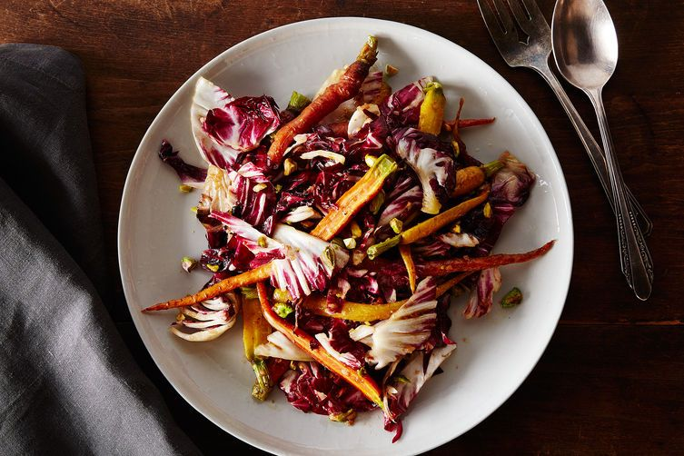

The Big Salad

Description
A salad—no, a big salad—leads to George and his girlfriend Julie breaking up. Elaine asks George to pick up a big salad for her. He does; however, Julie hands it to Elaine and takes credit for the salad’s doing. George loses it, equating the salad’s purchase with his generosity.
Ingredients
- 1/2 cup pistachios, toasted, roughly chopped
- 1 cup plus 1 tablespoon extra-virgin olive oil, divided
- 1 small shallot, minced
- 1/4 cup balsamic vinegar
- 1/2 cup diced fresh figs, or 2 large dried figs (see note in step 2)
- Kosher salt
- 2 pounds multi-colored carrots, halved lengthwise
- 1 medium to large head radicchio
Steps
- Heat the oven to 375° F. Set the pistachios in a heavy, dry pan on the stovetop over low heat to toast. Toast, shaking the pan from time to time, until they smell nutty and fragrant, 5 to 10 minutes.
- Make the dressing: Whisk together a half cup of the olive oil, the shallot, vinegar, figs, 2 tablespoons water, and a small pinch of salt. Note: If you can't find fresh figs, blend 2 dried, de-stemmed figs with the water, salt, and vinegar, then slowly stream in the olive oil with the blender running. Whisk in the shallot separately.
- Toss the carrots with 1/2 cup of olive oil in a large bowl, season with a large pinch of salt, and spread out on a baking sheet in one layer. Pour 1/4 cup of water over the top. Roast until the carrots have just started to brown and crisp on the edges, about 20 to 25 minutes.
- Core and roughly chop the radicchio, and place half the leaves in a large bowl.
- When the carrots are close to done, heat the remaining 1 tablespoon of olive oil in a skillet over medium-high heat. Add the remaining radicchio, and flash-cook until it wilts and begins to brown in places. Transfer to the bowl with the raw radicchio.
- Add the carrots to the salad bowl, drizzle with a bit of dressing (you will not use it all, so start slow), and toss very gently to keep the carrots intact. Add the pistachios, toss, and taste and adjust for dressing and salt. Serve.
Back to homepage